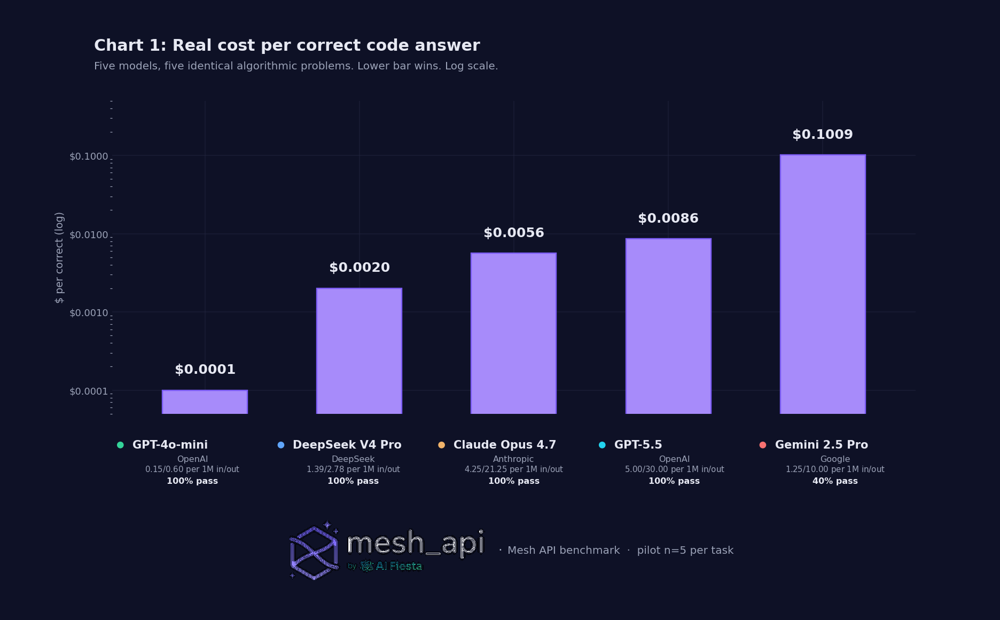
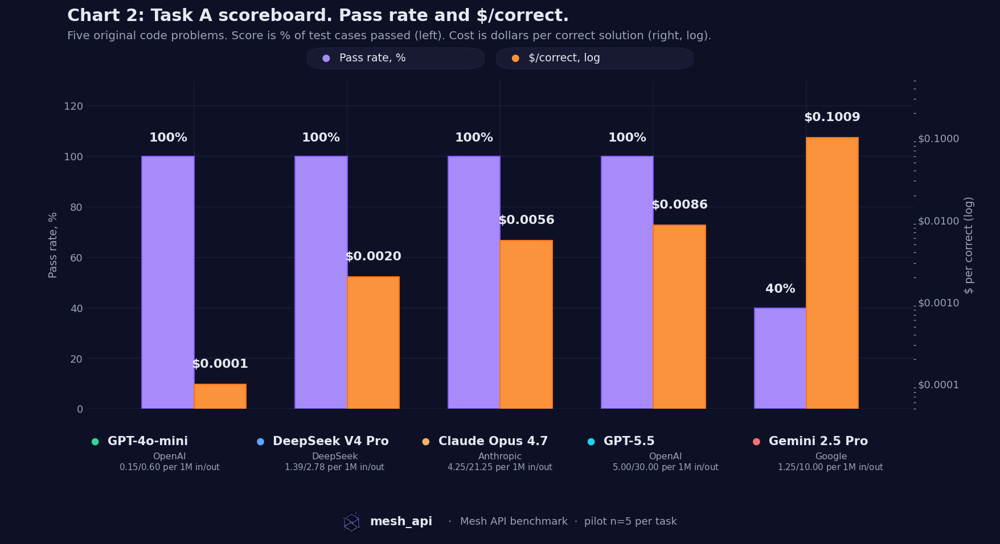
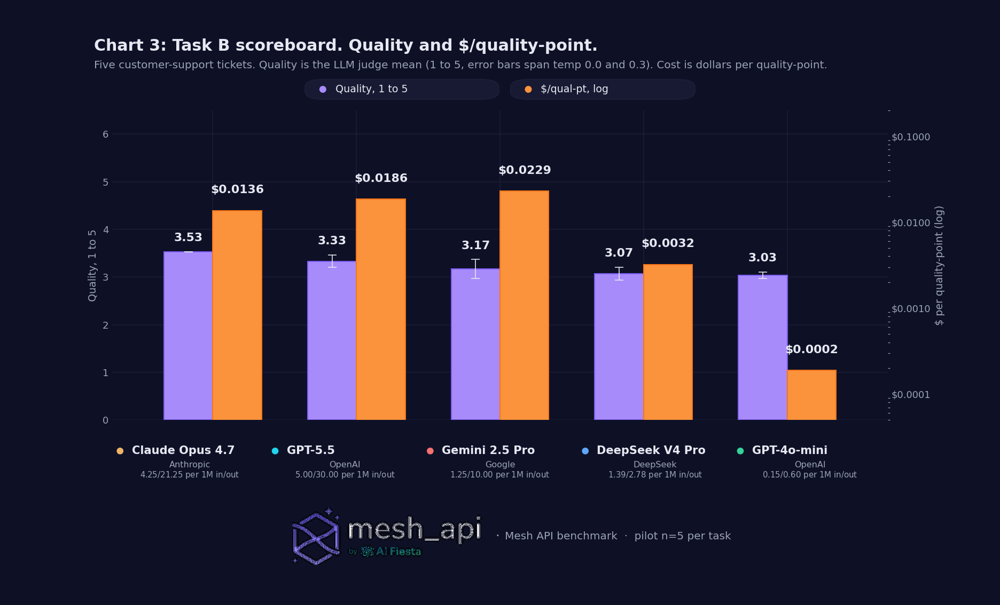
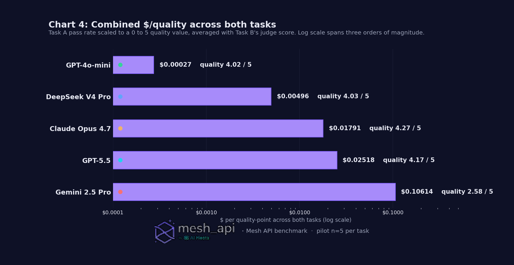

Five LLMs. Two tasks. Fifty calls. We measured what they actually cost, not what the price card says.
Heads up before you read further.
What follows is what we found on our prompts, on one afternoon, in one region, with one model judge, on five items per task. Not the truth of the universe. Just what the receipts said. Different prompts, different sample sizes, different judge models, different time of day, even different randomness on temperature 0.2 could shift the rankings.
The whole run is reproducible. The prompts, the runner, the judge, and the aggregator are in the repo. If you run them and get different numbers, that's a feature. Please reply with what you saw. We'd rather get corrected in public than be wrong in silence.
This is a pilot (n=5/task). v1 with n=30 is coming. The headline gaps are big enough that the broad shape is unlikely to flip, but the second-decimal differences absolutely could.

Two tasks. Same five models. Same prompts to all of them. Token counts straight from each provider's usage field, not estimated. Dollars at the prices Mesh actually billed us.
The exact datasets, task_a_code.json and task_b_support.json (30 items each, 5 used in the pilot), are in the repo. Run them against any model you can route to.
| Model | Tier | List $/M (in / out) |
|---|---|---|
| GPT-5.5 | Frontier | $5.00 / $30.00 |
| Claude Opus 4.7 | Frontier | $5.00 / $25.00 (Mesh 15% disc → $4.25 / $21.25) |
| DeepSeek V4 Pro | Mid | $1.39 / $2.78 |
| Gemini 2.5 Pro | Mid | $1.25 / $10.00 |
| GPT-4o-mini | Workhorse | $0.15 / $0.60 |
| Model | Task A pass | Task A $/correct | Task B quality (1 to 5) | Task B $/qual-pt |
|---|---|---|---|---|
| GPT-4o-mini | 5/5 | $0.0001 | 3.03 ± 0.07 | $0.00019 |
| DeepSeek V4 Pro | 5/5 | $0.00201 | 3.07 ± 0.13 | $0.00322 |
| Claude Opus 4.7 | 5/5 | $0.00563 | 3.53 ± 0.00 | $0.01363 |
| GPT-5.5 | 5/5 | $0.00859 | 3.33 ± 0.13 | $0.01856 |
| Gemini 2.5 Pro | 2/5 | $0.10090 | 3.17 ± 0.20 | $0.02288 |
Two stories in one table.
On code: four of five models tied at perfect. The only differentiator was cost. The cheapest model came out 86× cheaper than GPT-5.5, 56× cheaper than Opus 4.7, and over 1,000× cheaper than Gemini 2.5 Pro per correct answer.
On support: Opus wins quality at 3.53, but it's a 0.5-point lead on a 5-point scale, costing 72× more per quality-point. Whether that's worth it depends entirely on how expensive a single bad reply is for your product.
The judge replicated itself perfectly on Opus (variance 0.00) and was noisiest on Gemini (0.20). Nothing exceeded 0.2, so the quality scores hold up.
Honest caveat. Five items is small. The frontier models likely pull ahead on accuracy as problems get longer and uglier (multi-file refactors, ambiguous specs, deep reasoning). The right question isn't "which model is best." It's "for the work I'm actually shipping, what's the smallest model that hits my accuracy bar?"
A token isn't a token isn't a token. Below are four cost layers we directly observed in this run. None of them on anyone's pricing page.
You'd assume "input tokens" is a property of your input. It isn't. It's a property of the tokenizer that turns your input into tokens, and every provider uses a different one.
Ten identical English prompts, sent to all five models. Here's the input-token count each provider reported:
| Model | Input tokens for the 10 prompts | Delta vs OpenAI baseline |
|---|---|---|
| GPT-4o-mini (OpenAI) | 1,544 | baseline |
| GPT-5.5 (OpenAI) | 1,534 | −0.6% |
| DeepSeek V4 Pro | 1,582 | +2.5% |
| Gemini 2.5 Pro | 1,637 | +6.0% |
| Claude Opus 4.7 | 2,468 | +59.8% |
Same text. Same words. Opus's tokenizer cut English into ~60% more pieces, and we paid for every piece. Opus's effective input price on this corpus comes out closer to $5.00 × 1.60 ≈ $8/M-in, not the $5/M-in on the card.
Your number will differ. Code-heavy traffic, multilingual, structured data, every workload tokenizes differently. The right thing to do: take 1,000 tokens of your actual traffic, send it through each provider with max_tokens=1, read usage.prompt_tokens, write down the ratio, plug it into your cost model. One hour of work, then your unit economics aren't lying to you anymore.
Some models "think" silently before they answer. Those reasoning tokens are real tokens, on your bill, even though you can't see them in the response.
Gemini 2.5 Pro is the worst case we measured:
A single Gemini call on Task A cost ~$0.04. The equivalent GPT-4o-mini call cost ~$0.0001. 400× more expensive, and Gemini got 2 of 5 right vs GPT-4o-mini's 5 of 5.
GPT-5.5 also does internal reasoning. Visibly less than Gemini, but it's there. Average output per Task A item: 226 tokens (GPT-5.5) vs 137 (GPT-4o-mini). That's 65% more billed output for similar-length final answers.
If your provider exposes a reasoning-effort knob, dial it to the lowest setting that hits your accuracy bar. "Thinking tokens" in marketing copy is "billed-but-invisible tokens" on your invoice.
The intuitive model is this: frontier models cost more but get more right, so $/correct evens out. In our run, it didn't. Four of five models, including the cheap one, hit 100% on the code test. The premium tiers didn't pull ahead on accuracy at all. They pulled ahead on dollars per correct answer, in the wrong direction:

| Model | $/correct | Multiple vs GPT-4o-mini |
|---|---|---|
| GPT-4o-mini | $0.0001 | 1× |
| DeepSeek V4 Pro | $0.00201 | 20× |
| Claude Opus 4.7 | $0.00563 | 56× |
| GPT-5.5 | $0.00859 | 86× |
| Gemini 2.5 Pro | $0.10090 | 1,009× |
Honest disclaimer. Five problems is a small slice. On longer, gnarlier problems (multi-step planning, large codebases, deep reasoning), the frontier models very likely pull ahead on accuracy, and the math flips. Take this as "the floor is lower than you think for common code," not "premium models are useless." The takeaway is to know where your floor is, then route accordingly.
On support, every model produced something workable. The quality range across all five was 3.03 to 3.53, a 0.5-point spread on a 5-point scale, or 14% relative.
The cost range over the same five was 80× ($0.0006 for GPT-4o-mini vs $0.0482 for Opus 4.7, after applying our placeholder output-token inflation).

Opus 4.7 buys a small quality bump for a huge cost bump. That can be worth it on calls where a bad reply is expensive (security, finance, brand-attached customer copy). It's a bad trade on the routine 80% of support volume where any of the five would have produced something fine.
The decision rule isn't "use the best model." It's "route the call by what it actually needs." Most companies skip that step and pay frontier prices for everything. The over-spend is structural, not accidental.
Cost isn't the only axis. On the same calls:
| Model | Task A avg | Task B avg |
|---|---|---|
| GPT-4o-mini | 2.4 s | 2.3 s |
| Claude Opus 4.7 | 3.9 s | 7.1 s |
| GPT-5.5 | 5.5 s | 9.2 s |
| Gemini 2.5 Pro | 28.0 s | 13.7 s |
| DeepSeek V4 Pro | 28.4 s | 16.2 s |
DeepSeek V4 Pro looks like a steal on $/correct (2nd-best at $0.00201) but it took ~28 seconds to produce each code answer on average. For an interactive product, that's unshippable. For an overnight batch job, it's a bargain. Match the model to the use case.
When we average the two tasks (treating Task A's pass rate as a 0 to 5 quality score for direct comparison), the ladder is clean:

A three-order-of-magnitude gap between cheapest and most expensive, with roughly the same quality on either end. The smartest model in the line-up costs 65× more per quality-point than the workhorse, for a 6% absolute quality improvement. That's a routing problem, not a model-selection problem.
A $0.15/M model handled 100% of our code problems and got within 86% of the top quality score on support. For most volume, that's plenty. Pay frontier prices for the calls where being wrong is unusually expensive, not for the calls where being right is unusually cheap.
Don't trust the price card. Our Opus 1.60× input-side ratio is specific to our English-text benchmark. Yours will differ. Spend an hour, get your real ratio, plug it in. Update quarterly.
Models that do invisible chain-of-thought can 5× or 50× your output bill without you seeing what you're paying for. If the provider exposes a reasoning-effort knob, pick the lowest setting that hits your accuracy bar. If not, monitor usage.completion_tokens against actual response length.
Pick a cheap default, an expensive escalation path, a heuristic for when to escalate. That structure handles the price card lying, tokenizer drift, and future model launches. Single-model architectures don't.
Every call in this benchmark went through Mesh (api.meshapi.ai). One client, one key, one bill, five providers behind it. Switching models was changing a string in a list. Without that, this whole post is a stack of SDKs, auth flows, rate-limit dialects, and per-vendor billing pages, and it would have taken a week, not an afternoon.
For production, same idea, plus the ability to route by prompt characteristic. Cheap default, frontier escalation, observability across all of it. That's the routing layer that lets Decision Rule 4 above actually become real code.
In service of honesty, here's everything we didn't cover. Hold us to all of these.
Everything above is a "what we didn't do." If you noticed a methodological hole we haven't named here, please reply. We'd rather fix it in v2 than ship it as a foundation.
usage. Mesh as the routing layer.(in_tokens × in_price + out_tokens × out_price × inflation_factor) / 1M. Input-side inflation came from real per-model token counts on identical prompts (see Tax 1). Output-side inflation is the kit's placeholder values, to be replaced in v2.Datasets: task_a_code.json, task_b_support.json. Both in the repo, MIT-licensed.
Scripts: runner.py, judge.py, aggregate.py, cost_estimator.py. Drop in your Mesh key, point at any subset of the catalog, get a CSV that matches this post's tables.
Total cost for the whole benchmark including discarded re-runs while we debugged: about $1.30. One Opus call is a quarter of a cent. A million of them adds up.